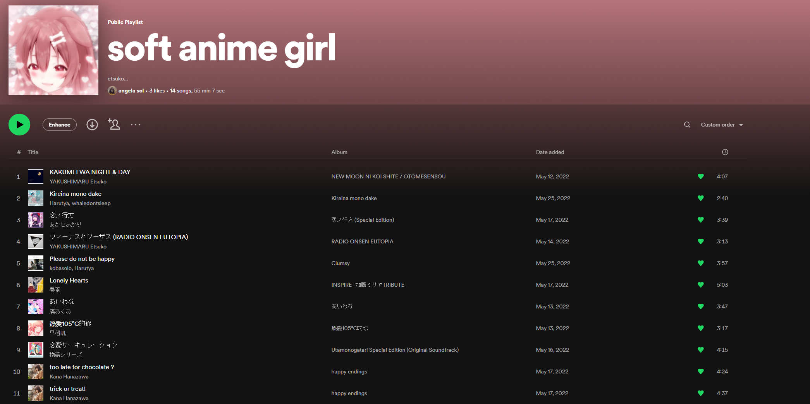
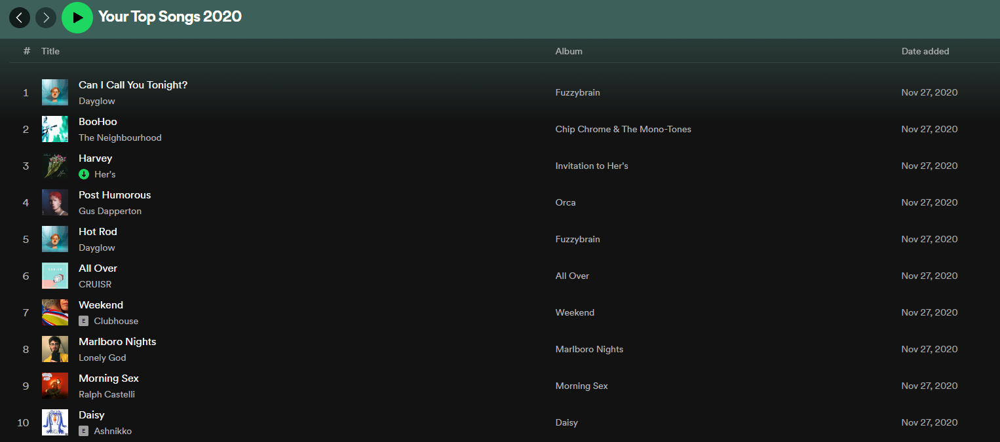

link to my spotify
my classics
sometimes, somehow, there are songs that i'll truly never get sick of. whether it's because of the memories such a
song may hold, or simply just because it's an really great song, i'll always consider it an all-time fave if it's one
that i still enjoy a ton after months or years. mostly, these songs have consisted of indie pop/rock (crazy4luvinu by
katsu oso, draem girl by no vacation, nicotine stains by second thoughts, etc.) and jpop (love zukkyun by soutaiseiriron,
notice me by moe shop, please do not be happy by kobasolo & harutya, etc.).
link to my spotify playlist with some of my all-time faves
--- my weeb tingz
my music taste has changed and developed a whole lot since i was young. i started diving into music more when i was in
grade 5 (so around when i was 11). i started with listening to the top 100 pop playlists and some of the music my favorite
youtubers liked. however now, i like to think that what i listen to now is a melting pot of myself and the people around me.
for instance, one of the reasons i've fallen back in love with japanese pop is because of some of my close friends...
they're absolute weebs. from hololive, kana hanazawa to YAKUSHIMARU etsuko, and admittedly a bit of vocaloids, i wouldn't
have dived back into them had it not been for my friends. especially etsuko & soutaiseiriron, two of my favorites, since
they're quite niche i believe.
link to a spotify playlist with YAKUSHIMARU etsuko & soutaiseiriron songs <3

link to my spotify playlist with cutesy japanese songs, including etsuko, harutya, kana hanazawa, etc. <3
--- my wannabe nicheness
aside from the indie and etsukos that i love, i always tend to wander off into other genres from time to time. if there is
anything i don’t really enjoy much, it’s metal and some rap? i guess i somewhat believe that there’s bound to be at least one
song that i could find enjoyable no matter the genre. hence, i find myself bouncing between different playlists throughout the
years. although, part of it to blame is my indecisiveness and passive nature combined with getting tired of certain songs for
whatever reason (usually association with people and seasons). even so, i find myself always coming back home to indie.
but going along with my genre hopping, even the things i don’t like have their exceptions. for example, i’ve found myself liking
metal (babymetal??? i just like the cutesy bits though), and recently i’ve tried listening to jack harlow… although it’s because
i watched an interview and found jack cute. anyways, i’ve walked through a lot of genre seasons. i’ve found myself dancing around
in kpop (which i still enjoy time to time, like le sserafim, nct, red velvet, newjeans), vocaloid and vtuber music (my hololive
babies, amatsukauto, inabakumori, wowaka), opm of course (my idol zack tabudlo, the legend iv of spades), to musicals (hamilton,
heathers, waitress, dear evan hansen)--- i feel like i've hit about everything except for the real niche stuff.
link to a a compilation playlist of my high school years <3
to get my point across, i'll share my top 10s throughout my high school years.
here, you can see how indie pop has pretty much been a constant, but i've dived into a bunch of other genres.
